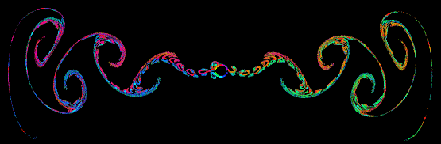
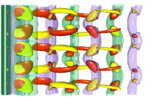
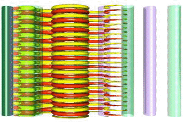
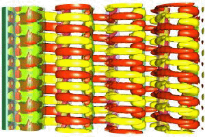
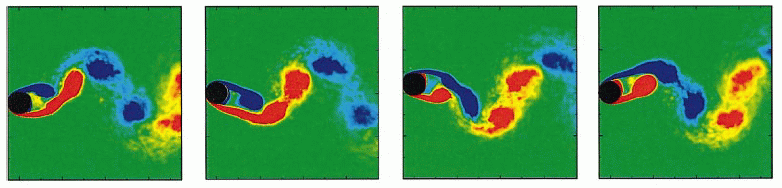
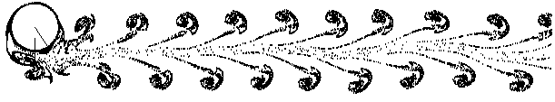
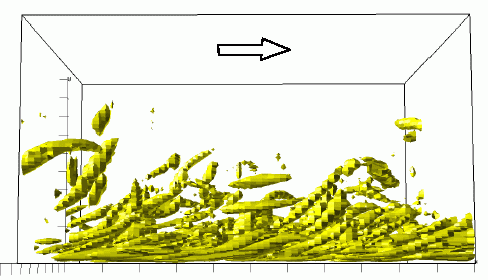

Contact details
Hugh M Blackburn
Associate Professor
Department of Mechanical Engineering
Monash University
Vic 3800
Australia
Send email to hugh.blackburn@eng.monash.edu.au
Flow Gallery
An animation of the period-doubling breakdown of pulsatile flow
in an axisymmetric constricted tube (Sherwin &
Blackburn 2005, Blackburn &
Sherwin 2007). This is an idealised representation of
blood flow in an artery with 75% occlusion, Reynolds number 400,
Womersley number 15.85. The vortex rings that are blown out of the
constriction with each pulse tilt slightly forward, then backward, on
successive periods. Under self-induction and wall interaction of the
vorticity in the ring, this tilting proceeds rapidly to an energetic
breakdown.

The flow generated by a circular cylinder
moving from side to side in quiescent fluid has a number of different
instability modes, depending on the amplitude and period of the
motion. This image of massless particles advected by a quasi-periodic
instability mode shows how small puffs form up into large-scale
vortices that move away from the cylinder along the axis of
oscillation (Elston, Blackburn & Sheridan,
2006).
| Mode A, Re=195 |
Mode B, Re=265 |
Mode TW, Re=400 |
|  |
 |
 |
Karman-street wakes of two-dimensional bodies generically have three
kinds of three-dimensional instability modes; two distinct synchronous
modes which at onset have the same frequency as the underlying wake,
and two related quasi-periodic modes (standing and travelling waves),
one of which may be stable. Here we see in top view the two
synchronous modes of the circular cylinder wake (modes A and B), and
the travelling wave mode, which is the third to bifurcate from the
two-dimensional basic state as Reynolds numbers are increased (Blackburn, Marques & Lopez, 2005).
Isosurfaces of vorticity indicating a synchronous three-dimensional
instability mode of a flow in a periodically driven two-dimensional
rectangular cavity (Blackburn & Lopez 2003).
The cavity cross-section has a height:width ratio of 2:1, and the
lower floor has an imposed sinusoidal oscillation of temporal period
T. The symmetry group of the base flow is identical to that of
many time-periodic wakes, and the three-dimensional instability modes
consequently have the same symmetry properties as e.g. those of the
circular cylinder wake. There are two control parameters, a Reynolds
number and a Stokes number. Here, at
St=20 and
Re=535, the first mode to become unstable is a short-wavelength
one, with some similarity to the cylinder wake's mode B. Translucent
isosurfaces are of wall-parallel vorticity, while the solid red/yellow
surfaces are of the vertical vorticity component. At other parameter
values, this flow also has a long-wavelength synchronous mode and a
quasi-periodic modulated travelling wave mode.

Colour contours of spanwise- and
phase-averaged spanwise component of vorticity from a
three-dimensional simulation of flow past a circular cylinder in
vortex-induced vibration, at Re=720, Vr=6.5
(Blackburn, Govardhan & Williamson 2001). The
four frames illustrate averages for phase-points equispaced over the
average vortex-shedding period. Note the clear indication of 2P-mode
shedding, the first time this had been documented as a phase-averaged
result in a DNS study. The average oscillation amplitude was
approximately 0.45D.
Download an MPEG movie from the simulation (6.4MB).

The pattern produced by tracking massless
particles in two-dimensional flow past a swimming cylinder (Blackburn, Elston & Sheridan 1999). The cylinder has
forced oscillations both in the vertical direction and in rotation
about its axis. The time-average effect is to create a low pressure
region to the left of the cylinder; if the cylinder is free to move
horizontally, it 'swims' to the left, leaving behind it a sequence of
puff-like structures, seen here.
As one stage in the 'dynamic' procedure for large-eddy simulation,
velocity fields need explicit smoothing, or spatial low-pass
filtering, to remove fine-scale fluctuations. These panels show
contours of streamwise velocity component on a slice through a
spectral element simulation of a turbulent channel flow, both before
filtering, and after a filter was applied in the Legendre polynomial
space projection of the data in each element (Blackburn & Schmidt 2003).

A perspective side-view of near-wall structures in a turbulent
boundary layer, visualised with an instantaneous isosurface of a
positive value of the discriminant of the velocity gradient tensor (Blackburn, Mansour & Cantwell 1996). When the
discriminant is positive, the velocity gradient tensor has a pair of
complex-conjugate eigenvalues and a single real eigenvalue, so the
local fluid motion has a spiralling character. The isosurfaces mark a
a large number of distinct structures that are nearly parallel to the
wall in the buffer layer, which, further from the wall, tilt to have
an orientation closer to 45o downstream, i.e. aligned with
the direction of time-average maximum strain rate. The time-mean flow
direction is indicated by the arrow.
An image from a movie
(9Mb) of a large manta ray (manta
birostris) swimming using rajiform motion and with an
accompanying remora in the main tank of the Lisbon
oceanarium. Another movie
(7Mb) of a smaller manta ray is also available.
Semtex
Semtex is my direct numerical simulation CFD code that uses the
`classical' nodal spectral element method as the
underlying discretisation. Semtex was used to generate most of the
simulation results described above, and is also the base code for most
of the work described in the publications listed below. It is
released for public use under the terms of the Gnu General
Public License (GPL). For more information and source code, follow this link.
Publications*
Journal articles
In print
- Instability modes and transition of pulsatile
stenotic flow: pulse-period dependence
- Blackburn HM &
Sherwin SJ (2007)
J Fluid Mech 573: 57–88.
PDF
- Direct numerical simulation of turbulent non-Newtonian flow
using a spectral element method
- Rudman M & Blackburn
HM (2006) Appl Math Mod 30(11): 1229–1248.
PDF
- The primary and secondary instabilities of flow
generated by an oscillating circular cylinder
- Elston
JR, Blackburn HM & Sheridan J (2006) J Fluid Mech
550: 359–389.
PDF
- Three-dimensional instabilities and transition of
steady and pulsatile axisymmetric stenotic flows
- Sherwin SJ & Blackburn HM (2005) J Fluid Mech
533: 297–327.
PDF
- Three-dimensional modes in a periodically driven elongated
cavity
- Leung JJF, Hirsa AH, Blackburn HM, Lopez JM &
Marques F (2005) Phys Rev E 71: 026305-1–7.
PDF
- Symmetry breaking of two-dimensional
time-periodic wakes
- Blackburn HM, Marques F & Lopez
JM (2005) J Fluid Mech 522: 395–411.
PDF
- Formulation of a Galerkin spectral element–Fourier method for
three-dimensional incompressible flows in cylindrical
geometries
- Blackburn HM & Sherwin SJ (2004)
J Comp Phys 179(2): 759–778.
PDF
- Turbulent pipe flow of non-Newtonian fluids
- Rudman
M, Blackburn HM, Graham LJW & Pullum L (2004)
J Non-Newt Fluid Mech 118(1): 33–48.
PDF
- Bifurcations in systems with Z2
spatio-temporal and O(2) spatial symmetry
- Marques F,
Lopez JM & Blackburn HM (2004) Physica D
189(3/4): 247–276.
PDF
- Two-dimensional Floquet stability analysis of the flow
produced by an oscillating circular cylinder in quiescent
fluid
- Elston JR, Sheridan J & Blackburn HM (2004)
Euro J Mech/B-Fluids 23: 99–106.
PDF
- The onset of three-dimensional standing and
modulated travelling waves in a periodically driven cavity
flow
- Blackburn HM & Lopez JM (2003) J Fluid
Mech
497: 289–317.
PDF
- On three-dimensional quasi-periodic Floquet instabilities of
two-dimensional bluff body wakes
- Blackburn HM &
Lopez JM (2003) Phys Fluids 15(8): L57–60. PDF
- Spectral element filtering techniques for large eddy
simulation with dynamic estimation
- Blackburn HM &
Schmidt S (2003) J Comp Phys 186(2):
610–629.
PDF
- Mass and momentum transport from a sphere in steady and
oscillatory flows
- Blackburn HM (2002)
Phys Fluids 14(11): 3997–4001. PDF
- Three-dimensional instability and state selection in an
oscillatory axisymmetric swirling flow
- Blackburn
HM (2002) Phys Fluids 14(11): 3983–3996. PDF
- Modulated rotating waves in an enclosed swirling flow
- Blackburn HM & Lopez JM (2002) J Fluid Mech
465: 33–58. PDF
- A complementary numerical and physical
investigation of vortex-induced vibration
- Blackburn
HM, Govardhan R & Williamson CHK (2001) J Fluids &
Structures
15(3/4): 481–488. PDF
- Sidewall boundary layer instabilities in an enclosed swirling
flow
- Blackburn HM (2001) J Turbulence
2 009. PDF
- Dispersion and diffusion in coated tubes of arbitrary
cross-section
- Blackburn HM (2001) Computers &
Chemical Engineering 25(2/3): 313–322. PDF
- Symmetry breaking of the flow in a cylinder driven by a
rotating endwall
- Blackburn HM & Lopez JM (2000)
Phys Fluids 12(11): 2698–2701. PDF
- Domain decomposition with Robin boundary conditions across a
phase interface
- Blackburn HM (2000) ANZIAM J
42(E): C263–C290. PDF
- Spectral element–Fourier methods applied to turbulent pipe
flow
- McIver DM, Blackburn HM & Nathan GJ (2000)
ANZIAM J 42(E): C954–C977. PDF
- A hybrid method for simulation of flows in stirred tanks
- Blackburn HM, Elston JR, Niclasen DA, Rudman M &
Wu J (2000) Appl Math Mod 24: 795–805. PDF
- Vortex breakdown — theory and experiment
- Blackburn
HM & Graham LJW (2000) Album of Visualization
17: 13–14.
- A study of two-dimensional flow past an oscillating
cylinder
- Blackburn HM & Henderson RD (1999)
J Fluid Mech 385: 255–286. PDF
- Bluff body propulsion produced by combined rotary and
translational oscillation
- Blackburn HM, Elston
JR & Sheridan J (1999) Phys Fluids 11(1):
4–6. PDF
- Sectional lift forces for an oscillating cylinder in smooth
and turbulent flows
- Blackburn HM & Melbourne
WH (1997) J Fluids & Structures 11(4):
413–431. PDF
- Lock-in behaviour in simulated vortex-induced vibration
- Blackburn HM & Henderson RD (1996) Exptl Thermal &
Fluid Sci 12(2): 184–189. PDF
- Topology of fine-scale motions in turbulent
channel flow
- Blackburn HM, Mansour NN & Cantwell BJ
(1996)
J Fluid Mech 310: 269–292. PDF
- The effect of free-stream turbulence on sectional lift forces
on a circular cylinder
- Blackburn HM & Melbourne
WH (1996) J Fluid Mech 306: 267–292. PDF
- Effect of blockage on spanwise correlation in a circular
cylinder wake
- Blackburn HM (1994) Expts
Fluids 18(1/2):134–136. PDF
- Cross flow response prediction of slender
circular-cylindrical structures: prediction models and recent
experimental results
- Blackburn HM & Melbourne
WH (1993) J Wind Engng & Ind Aero 49:
167–176.PDF
- Lift on an oscillating cylinder in smooth and turbulent
flow
- Blackburn HM & Melbourne WH (1992) J Wind
Engng & Ind Aero 41: 79–90.PDF
- Predicted moisture loss from soft brown coal during transport
by overland conveyor
- Attwood R & Blackburn HM (1986)
Mech Engng Trans, IEAust 1 March, 12–15.
Book Chapters
- Computational bluff body fluid dynamics and
aeroelasticity
- Blackburn HM (2003) Coupling of
Fluids, Structures and Waves Problems in Aeronautics Eds
NG Barton & J Periaux: Springer, Notes in Numerical Fluid
Mechanics, 10–23. PDF
- Turbulent pipe flow of non-Newtonian fluids
- Rudman
M & Blackburn HM (2003) Computational Fluid Dynamics
2002 Eds S Armfield, P Morgan & K Srinivas: Springer,
687–692.
- Sidewall boundary layer instabilities in confined swirling
flow
- Blackburn HM (2000) Advances in Turbulence
VIII Ed C Dopazo: CIMNE, 607–610.
- Wake dynamics in flow past an oscillating cylinder
-
Blackburn HM & Henderson RD (1995) Numerical Methods in
Laminar & Turbulent Flow IX Eds C Taylor & P Durbetaki:
Pineridge Press, 1479–1490.
Conference papers
- Instability, transition and receptivity of pulsatile flow in a
stenotic tube
- Blackburn HM & Sherwin SJ (2006)
5th Int Conf CFD Minerals & Proc. Ind. Melbourne,
December.
- Instability modes and transition of pulsatile stenotic
flow
- Blackburn HM & Sherwin SJ (2006), Am Phys
Soc Division of Fluid Dynamics Tampa, FL, November.
- Convective and absolute instability of pulsatile stenotic
flow
- Blackburn HM & Sherwin SJ (2006),
3rd Intnl Sympo Modelling of Physiological Flows Bergamo,
September.
- Direct simulation of turbulence and transition in steady and
pulsatile flow in a model stenotic geometry
- Sherwin SJ &
Blackburn HM (2006) 5th World Congress Biomechanics,
Munich, July.
- Instability and transition of pulsatile flow in
stenotic/constricted pipes
- Sherwin SJ & Blackburn HM
(2006) Euromech 2006, Stockholm, June.
- Simulation of suspension of solids in a liquid in a mixing
tank using SPH and comparison with physical modelling experiments
- Prakash, M, Cleary, PW, Ha, J, Noui-Mehidi MN, Blackburn HM,
& Brooks G (2005) 4th Int Conf CFD in Oil & Gas,
Metallurgical and Process Industies, Trondheim, June.
- Three-dimensional Floquet stability analysis of the flow
produced by an oscillating cylinder in quiescent fluid
- Elston JR, Sheridan J & Blackburn HM (2005)
BBVIV4 Santorini, June.
- An experimental study on floating solids in a liquid bath
- Noui-Mehidi MN, Blackburn HM, Manasseh R, Brooks G &
Rudman M (2005) EPD Congress, TMS Annual Meeting San
Francisco, February.
- Three-dimensional quasi-periodic instabilities of
two-dimensional time-periodic flows
- Blackburn HM, Lopez
JM & Marques F (2004) 15AFMC Sydney, December. PDF
- Three-dimensional instabilities and transition in pulsatile
stenotic flows
- Blackburn HM & Sherwin SJ (2004)
15AFMC Sydney, December. PDF
- Impact of outlet boundary conditions on the flow properties in
a cyclone
- Schmidt S, Blackburn HM & Rudman M (2004)
15AFMC Sydney, December. PDF
- Three-dimensional modes in a periodically driven elongated
cavity
- Leung JJF, Hirsa AH, Blackburn HM, Marques F &
Lopez JM (2004) Am Phys Soc Division of Fluid Dynamics Seattle,
WA, November.
- Three-dimensional instabilities of steady and pulsatile
axisymmetric stenotic flows
- Sherwin SJ & Blackburn HM
(2004) Am Phys Soc Division of Fluid Dynamics Seattle,
WA, November.
- A new spectrally convergent spectral element–Fourier
formulation for solution of Navier–Stokes problems in
cylindrical coordinates
- Blackburn HM & Sherwin SJ
(2004) ICOSAHOM 2004 Brown University, RI, June.
- Sobre las inestabilidades tridimensionales de flujos
bidimensionales con simetría espacio-temporal
Z2
- Marques F, Lopez JM & Blackburn
HM (2004) Nolineal 2004 Universidad de Castilla–La
Mancha, June.
- BiGlobal instabilities of steady and pulsatile flow in a 75%
axisymmetric stenotic tube
- Sherwin SJ & Blackburn
HM (2003) Intnl Bio-Fluid Symposium and Workshop
Caltech, USA, December.
PDF
- Simulation of turbulent flow in a cyclonic separator
-
Schmidt S, Blackburn HM, Rudman M & Sutalo I (2003)
3rd Int Conf CFD Minerals & Proc. Ind. Melbourne,
December.
- The effect of shear-thinning behaviour on turbulent pipe
flow
- Rudman M & Blackburn HM (2003)
3rd Int Conf CFD Minerals & Proc. Ind. Melbourne,
December.
- Endwall effects in periodically driven cavity
flow
- Leung JJF, Hirsa, AH, Lopez JM & Blackburn
HM (2003) Am Phys Soc Division of Fluid
Dynamics Meadowlands, NJ, November.
- Floquet stability analysis of non-axisymmetric pulsatile
stenotic flows
- Blackburn HM & Sherwin SJ (2003)
World Cong Med Phys & Biomed Eng Sydney, August.
- Two-dimensional Floquet stability analysis of the flow
produced by an oscillating cylinder in quiescent fluid
- Elston JR, Sheridan J & Blackburn HM (2002)
BBVIV3 Port Douglas, December.
- Spatio-temporal dynamics of a periodically driven cavity
flow
- Vogel M, Hirsa AH, Lopez JM & Blackburn
HM (2002) Am Phys Soc Division of Fluid
Dynamics Dallas, TX, November.
- Turbulent pipe flow of non-Newtonian fluids
- Rudman
M & Blackburn HM (2002) Int Conf CFD 2 Sydney,
July.
- Non-Newtonian turbulent and transitional pipe flow
- Rudman M, Graham LJW, Blackburn HM & Pullum L (2002)
15th Int Conf Hydrotransport Banff, June.
- Computational bluff body fluid dynamics and aeroelasticity
- Blackburn HM (2001) CSIRO/CNRS/Dassault Workshop
on Coupling of Fluids, Structures and Waves in Aeronautics
Melbourne, December.
- Symmetry breaking to modulated rotating waves in an enclosed
swirling flow
- Blackburn, HM & Lopez JM (2001)
14th A/Asian Fluid Mechanics Conf Adelaide,
December. 179–182. PDF
- Large eddy simulation of flow past a circular cylinder
- Blackburn, HM & Schmidt S (2001) 14th A/Asian Fluid
Mechanics Conf Adelaide, December. 689–692. PDF
- The transition to three-dimensionality in the flow produced by
an oscillating circular cylinder
- Elston, JR, Sheridan,
J & Blackburn, HM (2001) 14th A/Asian Fluid Mechanics
Conf Adelaide, December. 319–322. PDF
- Weakly turbulent pipe flow of a power law fluid
-
Rudman, M, Blackburn, HM, Graham, LJW & Pullum L (2001)
14th A/Asian Fluid Mechanics Conf Adelaide,
December. 925–928. PDF
- Spectral element based dynamic large eddy simulation of
turbulent channel flow
- Schmidt, S & Blackburn, HM
(2001) 14th A/Asian Fluid Mechanics Conf Adelaide,
December. 391–394. PDF
- Spectral element based simulation of turbulent pipe flow
- Schmidt, S, McIver, DM, Blackburn, HM, Rudman, M &
Nathan GJ (2001) 14th A/Asian Fluid Mechanics Conf
Adelaide, December. 917–920. PDF
- The onset of three-dimensionality in the flow generated by an
oscillating cylinder
- Elston, JR, Blackburn, HM &
Sheridan J (2000) Am Phys Soc Division of Fluid
Dynamics Washington, DC, November.
- Multiple unsteady solutions and symmetry breaking in a
confined swirling flow
- Lopez, JM, Marques, F,
Sanchez, J & Blackburn, HM (2000) Am Phys Soc Division
of Fluid Dynamics Washington, DC, November.
- A complementary numerical and physical investigation of
vortex-induced vibration
- Blackburn, HM, Govardhan,
R & Williamson, CHK (2000) IUTAM Symposium Bluff Body
Wakes & Vortex-Induced Vibration Marseille, June.
- Sidewall boundary layer instabilities in confined swirling
flow
- Blackburn, HM (2000) 8th European Turbulence
Conf Barcelona, June.
- Large eddy simulation of turbulent pipe flow
- Rudman,
M & Blackburn, HM (1999) 2nd Intnl Conf CFD in Minerals &
Process Ind Melbourne, December.
- Domain decomposition with Robin boundary conditions across a
phase interface
- Blackburn, HM (1999) CTAC99
Canberra, September.
- Spectral element–Fourier methods applied to turbulent pipe
flow
- McIver, DM, Blackburn, HM & Nathan, GJ (1999)
CTAC99 Canberra, September.
- Channel flow LES with spectral elements
- Blackburn,
HM (1998) 13th A/Asian Fluid Mechanics Conf Melbourne,
December, 989–992.
- A comparison of two- and three-dimensional wakes of an
oscillating circular cylinder
- Blackburn, HM (1998)
13th A/Asian Fluid Mechanics Conf Melbourne, December,
749–752. PDF
- Turbulent Taylor–Couette flow
- Rudman, M. &
Blackburn, HM (1998) 13th A/Asian Fluid Mechanics Conf
Melbourne, December, 163–166.
- Flows created by a cylinder with oscillatory translation and
spin
- Blackburn, HM, Elston, JR & Sheridan J (1998)
ASME Fluids Engng Div. Summer Meeting Washington DC,
June, FEDSM98–5157.
- Bubble rise in an inclined channel
- Rudman, M,
Blackburn, HM & Merrell, J (1997) Intnl Conf CFD in Min,
Met Proc & Power Gen Melbourne, July, 307–312. PDF
- Gauss and Gauss–Lobatto element quadratures applied to
the incompressible Navier–Stokes equations
-
Niclasen, RD & Blackburn, HM (1997) CTAC97 Adelaide,
September, 457–464. PDF
- Flow simulation of a mixing vessel incorporating blade
element theory
- Niclasen, RD, Rudman, M, Blackburn,
HM & Wu, J (1997) Intnl Conf CFD in Min, Met Proc &
Power Gen Melbourne, July, 395–401.
- The role of small-scale physical modelling of fluid dynamic
processes in mineral processing
- Welsh, MC, Pullum,
L, Downie, RJ, Cooper, PI & Blackburn, HM (1996)
Adv Alumina Technology Darwin, June, ii–xvi.
- Near-wake vorticity dynamics in bluff body flows
-
Blackburn, HM & Henderson, RD (1995) 12th A/Asian Fluid
Mechanics Conf Sydney, December, 17–20.
- A comparison of mass-lumping techniques for the
two-dimensional Navier–Stokes equations
- Niclasen, RD &
Blackburn, HM (1995) 12th A/Asian Fluid Mechanics Conf
Sydney, December, 17–20.
- Phase control of vortex shedding during lock-in
-
Blackburn, HM & Henderson, RD (1995) Am Phys Soc
Division of Fluid Dynamics 40(12) Irvine,
California, November.
- Wake dynamics in flow past an oscillating cylinder
-
Blackburn, HM & Henderson, RD (1995) 9th Intnl
Conf Num Meth Laminar & Turb Flow Altanta, July,
1479–1490.
- Progress in simulation of vortex-induced vibration
-
Blackburn, HM & Henderson, RD (1994) AWES 4th National
Workshop Sydney, October.
- Body-wake interaction during vortex-induced vibration
- Blackburn, HM & Henderson, RD (1994) Intnl
Colloq Jets, Wakes & Shear Layers Melbourne, April.
- Two- and three-dimensional simulations of vortex-induced
vibrations of a circular cylinder
- Blackburn, HM &
Karniadakis, GE (1993) 3rd Intnl Offshore & Polar Engng
Conf Singapore, June, 715–720. PDF
- Cross flow response prediction of slender
circular-cylindrical structures: prediction models and recent
experimental results
- Blackburn, HM & Melbourne,
WH (1992) BBAA2 Hobart, December.
- Topological characteristics of incompressible channel flow
- Blackburn, HM, Cantwell, BJ & Mansour, NM (1992)
Am Phys Soc Division of Fluid Dynamics Tallahasee,
Florida, November.
- Lift on an oscillating cylinder in smooth and turbulent
flow
- Blackburn, HM & Melbourne, WH (1991) 8th
Intnl Conf Wind Engng Ontario, June.
- Promotion of instability during lock-in
- Blackburn,
HM & Melbourne, WH (1991) AWES 4th National Workshop
Polkolbin, February.
- Measurements of coefficients of lift and spanwise correlation
for a circular cylinder oscillating in a turbulent flow
-
Blackburn, HM & Melbourne, WH (1989) 10th A/Asian Fluid
Mechanics Conf Melbourne, December.
- Frequency and time domain cancellation of inertial signal
from an accelerating force transducer
- Blackburn, HM &
Melbourne, WH (1989) Workshop Ind Fluid Dyn., Heat Trans. &
Wind Engng Melbourne, December.
- Aerodynamic wind effects on a tall chimney
- Manohar,
SM, Blackburn, HM & Melbourne, WH (1989) 2nd
Asia–Pacific Symp Wind Engng Beijing, June, 764–771.
- Measurements of sectional lift forces on an oscillating
cylinder
- Blackburn, HM & Melbourne, WH (1989) 2nd
Asia–Pacific Symp Wind Engng Beijing, June, 322–339.
- Predicted moisture loss from soft brown coal during transport
by overland conveyor
- Attwood, R & Blackburn, HM (1984)
Transportation Conference 84/9, IEAust Perth, 43–46.
Thesis
Lift on an oscillating cylinder in smooth and turbulent flows,
Department of Mechanical Engineering, Monash University, 1992.
Frontmatter,
Chapter 1,
Chapter 2,
Chapter 3,
Chapter 4,
Chapter 5,
Chapter 6,
Chapter 7,
Appendix A,
Appendix B,
Appendix C.
*You may download copies of papers for personal use; any
other use requires prior permission of the author and publisher.
Irrigation history
Pioneering Irrigation in Australia to
1920 is a book by my father, Gerard Blackburn. Please follow
this link to view bibliographic and
publication details.
F3K database
Discus launch gliders are high-performance radio-controlled sailplanes
that are thrown into the air using a wing-tip peg, and use thermals to
achieve sustained flight. This table
gives data and links to information about the best commercially
available models. Typical launch heights are of order 50m, typical
no-lift flight durations of order 2 minutes.